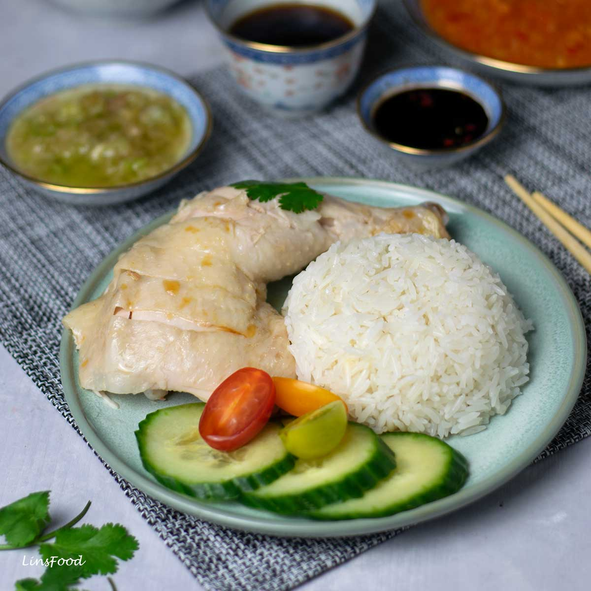

Chicken Rice
Description
This classic SIngaporean dish came from CHinese immigrants in early Singapore. From its aromatic rice boiled in chicken stock, to its sensationally juicy white chicken, with generous amounts of chilli and garlic, it is a food which is a must-have when in SIngapore!
DO YOU want to have a taste of this delicacy. Don't fret, this recipe will guide you towards making Chicken RIce that will make you feel right at home no matter where you go.
Ingredients
Chicken
Rice
Ginger-Garlic Chilli Sauce
Soup (from the poaching liquid)
Sambal Kicap
Ginger and Spring Onion Oil
Steps
If your chicken is not smooth and has the odd tiny feather left, rub it with salt to smooth out the skin. This is optional, and I usually don’t bother as I’m happy with the quality of the chicken I get. Rinse.
Remove the fatty deposits from the chicken (whether whole or portions).
Poach the chicken.
Render the chicken fat from step 2.
Hang the chicken up to dry after rubbing sesame oil all over.
Cook the rice with the poaching liquid and aromatics.
Keep the poaching liquid simmering on low heat.
Make the ginger-garlic chilli sauce (this uses a little poaching liquid).
Make the ginger-spring onion oil (scallion)
Make the sambal kicap
Strain the poaching liquid, then adjust seasoning to create a light, clear soup to go with our meal.
Chop up the chicken and serve with the rice, the condiments and the soup for everyone.